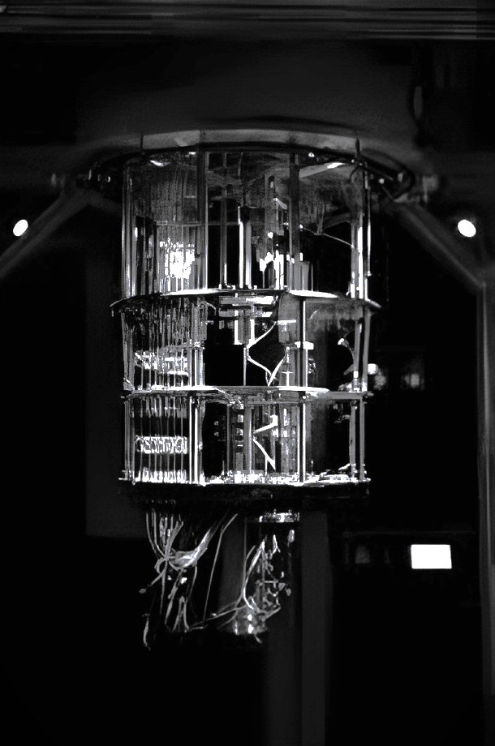

Introducing our Professional Quote Generator: 400+ curated quotes paired with captivating imagery. Elevate your daily routine with profound words and exquisite visuals, harnessing inspiration for every facet of life. Unleash your potential as the synergy of eloquence and imagery propels you forward.
-[Inspiration Daily]-
Inspirational Quote Generator
In a seismic scientific leap, experts boldly assert the impending realization of instantaneous communication through the enigmatic phenomenon of quantum entanglement. This groundbreaking claim, while met with anticipatory excitement, demands rigorous validation and scrutiny from skeptics. They emphasize the need for empirical evidence before embracing this audacious assertion. However, within the scientific community, there's a palpable sense of optimism that borders on visionary. Enthusiasts and technophiles alike envision a potential paradigm shift in technology, one that could rewrite the rules of global telecommunications.
The allure of near-instantaneous communication, unburdened by the limitations of distance or time, fuels this sense of optimism. Quantum entanglement's inherently mysterious and complex nature adds a layer of intrigue to this unfolding saga, almost reminiscent of science fiction. Yet, the undeniable truth is that the potential impact of this discovery on worldwide connectivity is nothing short of revolutionary.
As the world watches with bated breath, the prospect of unprecedented intercontinental communication teeters on the brink of becoming reality. In this thrilling age of scientific exploration, we find ourselves on the precipice of a new era, where the boundaries of what is possible are redrawn, and the horizons of human achievement seem to stretch ever further.

The allure of near-instantaneous communication, unburdened by the limitations of distance or time, fuels this sense of optimism. Quantum entanglement's inherently mysterious and complex nature adds a layer of intrigue to this unfolding saga, almost reminiscent of science fiction. Yet, the undeniable truth is that the potential impact of this discovery on worldwide connectivity is nothing short of revolutionary.
As the world watches with bated breath, the prospect of unprecedented intercontinental communication teeters on the brink of becoming reality. In this thrilling age of scientific exploration, we find ourselves on the precipice of a new era, where the boundaries of what is possible are redrawn, and the horizons of human achievement seem to stretch ever further.
Solar Desalination Revolutionizes Arid Africa
In arid Africa, a visionary solar-powered project is revolutionizing access to freshwater through cutting-edge desalination technology. This remarkable initiative, backed by international partners, addresses the pressing issue of water scarcity sustainably.
By harnessing the boundless energy of the sun, this eco-friendly endeavor transforms seawater into a vital resource, providing a lifeline for agriculture and significantly enhancing living conditions in these arid regions. In a world grappling with environmental challenges, this project stands as a beacon of hope, demonstrating the power of innovation and collaboration to create a brighter, more sustainable future for communities in need.